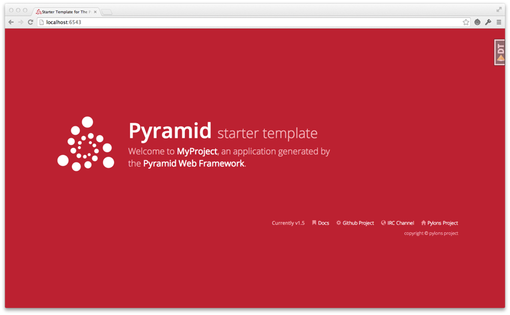
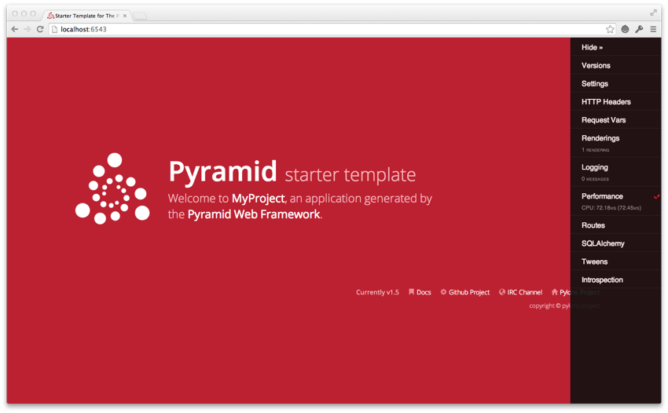

As we saw in Creating Your First Pyramid Application, it's possible to create a Pyramid application completely manually. However, it's usually more convenient to use a scaffold to generate a basic Pyramid project.
A project is a directory that contains at least one Python package. You'll use a scaffold to create a project, and you'll create your application logic within a package that lives inside the project. Even if your application is extremely simple, it is useful to place code that drives the application within a package, because: 1) a package is more easily extended with new code and 2) an application that lives inside a package can also be distributed more easily than one which does not live within a package.
Pyramid comes with a variety of scaffolds that you can use to generate a project. Each scaffold makes different configuration assumptions about what type of application you're trying to construct.
These scaffolds are rendered using the pcreate command that is installed as part of Pyramid.
The convenience scaffolds included with Pyramid differ from each other on a number of axes:
The included scaffolds are these:
In Installing Pyramid, you created a virtual Python environment via the virtualenv command. To start a Pyramid project, use the pcreate command installed within the virtualenv. We'll choose the starter scaffold for this purpose. When we invoke pcreate, it will create a directory that represents our project.
In Installing Pyramid we called the virtualenv directory env; the following commands assume that our current working directory is the env directory.
The below example uses the pcreate command to create a project with the starter scaffold.
On UNIX:
$ $VENV/bin/pcreate -s starter MyProject
Or on Windows:
> %VENV%\Scripts\pcreate -s starter MyProject
Here's sample output from a run of pcreate on UNIX for a project we name MyProject:
$ $VENV/bin/pcreate -s starter MyProject
Creating template pyramid
Creating directory ./MyProject
# ... more output ...
Running /Users/chrism/projects/pyramid/bin/python setup.py egg_info
As a result of invoking the pcreate command, a directory named MyProject is created. That directory is a project directory. The setup.py file in that directory can be used to distribute your application, or install your application for deployment or development.
A .ini file named development.ini will be created in the project directory. You will use this .ini file to configure a server, to run your application, and to debug your application. It contains configuration that enables an interactive debugger and settings optimized for development.
Another .ini file named production.ini will also be created in the project directory. It contains configuration that disables any interactive debugger (to prevent inappropriate access and disclosure), and turns off a number of debugging settings. You can use this file to put your application into production.
The MyProject project directory contains an additional subdirectory named myproject (note the case difference) representing a Python package which holds very simple Pyramid sample code. This is where you'll edit your application's Python code and templates.
We created this project within an env virtualenv directory. However, note that this is not mandatory. The project directory can go more or less anywhere on your filesystem. You don't need to put it in a special "web server" directory, and you don't need to put it within a virtualenv directory. The author uses Linux mainly, and tends to put project directories which he creates within his ~/projects directory. On Windows, it's a good idea to put project directories within a directory that contains no space characters, so it's wise to avoid a path that contains i.e. My Documents. As a result, the author, when he uses Windows, just puts his projects in C:\projects.
Warning
You'll need to avoid using pcreate to create a project with the same name as a Python standard library component. In particular, this means you should avoid using the names site or test, both of which conflict with Python standard library packages. You should also avoid using the name pyramid, which will conflict with Pyramid itself.
To install a newly created project for development, you should cd to the newly created project directory and use the Python interpreter from the virtualenv you created during Installing Pyramid to invoke the command python setup.py develop
The file named setup.py will be in the root of the pcreate-generated project directory. The python you're invoking should be the one that lives in the bin (or Scripts on Windows) directory of your virtual Python environment. Your terminal's current working directory must be the newly created project directory.
On UNIX:
$ cd MyProject
$ $VENV/bin/python setup.py develop
Or on Windows:
> cd MyProject
> %VENV%\Scripts\python.exe setup.py develop
Elided output from a run of this command on UNIX is shown below:
$ cd MyProject
$ $VENV/bin/python setup.py develop
...
Finished processing dependencies for MyProject==0.0
This will install a distribution representing your project into the virtual environment interpreter's library set so it can be found by import statements and by other console scripts such as pserve, pshell, proutes and pviews.
To run unit tests for your application, you should invoke them using the Python interpreter from the virtualenv you created during Installing Pyramid (the python command that lives in the bin directory of your virtualenv).
On UNIX:
$ $VENV/bin/python setup.py test -q
Or on Windows:
> %VENV%\Scripts\python.exe setup.py test -q
Here's sample output from a test run on UNIX:
$ $VENV/bin/python setup.py test -q
running test
running egg_info
writing requirements to MyProject.egg-info/requires.txt
writing MyProject.egg-info/PKG-INFO
writing top-level names to MyProject.egg-info/top_level.txt
writing dependency_links to MyProject.egg-info/dependency_links.txt
writing entry points to MyProject.egg-info/entry_points.txt
reading manifest file 'MyProject.egg-info/SOURCES.txt'
writing manifest file 'MyProject.egg-info/SOURCES.txt'
running build_ext
..
----------------------------------------------------------------------
Ran 1 test in 0.108s
OK
The tests themselves are found in the tests.py module in your pcreate generated project. Within a project generated by the starter scaffold, a single sample test exists.
Note
The -q option is passed to the setup.py test command to limit the output to a stream of dots. If you don't pass -q, you'll see more verbose test result output (which normally isn't very useful).
Once a project is installed for development, you can run the application it represents using the pserve command against the generated configuration file. In our case, this file is named development.ini.
On UNIX:
$ $VENV/bin/pserve development.ini
On Windows:
> %VENV%\Scripts\pserve development.ini
Here's sample output from a run of pserve on UNIX:
$ $VENV/bin/pserve development.ini
Starting server in PID 16601.
serving on http://0.0.0.0:6543
When you use pserve to start the application implied by the default rendering of a scaffold, it will respond to requests on all IP addresses possessed by your system, not just requests to localhost. This is what the 0.0.0.0 in serving on http://0.0.0.0:6543 means. The server will respond to requests made to 127.0.0.1 and on any external IP address. For example, your system might be configured to have an external IP address 192.168.1.50. If that's the case, if you use a browser running on the same system as Pyramid, it will be able to access the application via http://127.0.0.1:6543/ as well as via http://192.168.1.50:6543/. However, other people on other computers on the same network will also be able to visit your Pyramid application in their browser by visiting http://192.168.1.50:6543/.
If you want to restrict access such that only a browser running on the same machine as Pyramid will be able to access your Pyramid application, edit the development.ini file, and replace the host value in the [server:main] section. Change it from 0.0.0.0 to 127.0.0.1. For example:
[server:main]
use = egg:waitress#main
host = 127.0.0.1
port = 6543
You can change the port on which the server runs on by changing the same portion of the development.ini file. For example, you can change the port = 6543 line in the development.ini file's [server:main] section to port = 8080 to run the server on port 8080 instead of port 6543.
You can shut down a server started this way by pressing Ctrl-C.
The default server used to run your Pyramid application when a project is created from a scaffold is named Waitress. This server is what prints the serving on... line when you run pserve. It's a good idea to use this server during development, because it's very simple. It can also be used for light production. Setting your application up under a different server is not advised until you've done some development work under the default server, particularly if you're not yet experienced with Python web development. Python web server setup can be complex, and you should get some confidence that your application works in a default environment before trying to optimize it or make it "more like production". It's awfully easy to get sidetracked trying to set up a nondefault server for hours without actually starting to do any development. One of the nice things about Python web servers is that they're largely interchangeable, so if your application works under the default server, it will almost certainly work under any other server in production if you eventually choose to use a different one. Don't worry about it right now.
For more detailed information about the startup process, see Startup. For more information about environment variables and configuration file settings that influence startup and runtime behavior, see Environment Variables and .ini File Settings.
During development, it's often useful to run pserve using its --reload option. When --reload is passed to pserve, changes to any Python module your project uses will cause the server to restart. This typically makes development easier, as changes to Python code made within a Pyramid application is not put into effect until the server restarts.
For example, on UNIX:
$ $VENV/bin/pserve development.ini --reload
Starting subprocess with file monitor
Starting server in PID 16601.
serving on http://0.0.0.0:6543
Now if you make a change to any of your project's .py files or .ini files, you'll see the server restart automatically:
development.ini changed; reloading...
-------------------- Restarting --------------------
Starting server in PID 16602.
serving on http://0.0.0.0:6543
Changes to template files (such as .pt or .mak files) won't cause the server to restart. Changes to template files don't require a server restart as long as the pyramid.reload_templates setting in the development.ini file is true. Changes made to template files when this setting is true will take effect immediately without a server restart.
Once your application is running via pserve, you may visit http://localhost:6543/ in your browser. You will see something in your browser like what is displayed in the following image:
This is the page shown by default when you visit an unmodified pcreate generated starter application in a browser.
If you click on the image shown at the right hand top of the page ("^DT"), you'll be presented with a debug toolbar that provides various niceties while you're developing. This image will float above every HTML page served by Pyramid while you develop an application, and allows you show the toolbar as necessary. Click on Hide to hide the toolbar and show the image again.
If you don't see the debug toolbar image on the right hand top of the page, it means you're browsing from a system that does not have debugging access. By default, for security reasons, only a browser originating from localhost (127.0.0.1) can see the debug toolbar. To allow your browser on a remote system to access the server, add a line within the [app:main] section of the development.ini file in the form debugtoolbar.hosts = X.X.X.X. For example, if your Pyramid application is running on a remote system, and you're browsing from a host with the IP address 192.168.1.1, you'd add something like this to enable the toolbar when your system contacts Pyramid:
[app:main]
# .. other settings ...
debugtoolbar.hosts = 192.168.1.1
For more information about what the debug toolbar allows you to do, see the documentation for pyramid_debugtoolbar.
The debug toolbar will not be shown (and all debugging will be turned off) when you use the production.ini file instead of the development.ini ini file to run the application.
You can also turn the debug toolbar off by editing development.ini and commenting out a line. For example, instead of:
1 2 3 4 | [app:main]
...
pyramid.includes =
pyramid_debugtoolbar
|
Put a hash mark at the beginning of the pyramid_debugtoolbar line:
1 2 3 4 | [app:main]
...
pyramid.includes =
# pyramid_debugtoolbar
|
Then restart the application to see that the toolbar has been turned off.
Note that if you comment out the pyramid_debugtoolbar line, the # must be in the first column. If you put it anywhere else, and then attempt to restart the application, you'll receive an error that ends something like this:
ImportError: No module named #pyramid_debugtoolbar
The starter scaffold generated a project (named MyProject), which contains a Python package. The package is also named myproject, but it's lowercased; the scaffold generates a project which contains a package that shares its name except for case.
All Pyramid pcreate -generated projects share a similar structure. The MyProject project we've generated has the following directory structure:
MyProject/
|-- CHANGES.txt
|-- development.ini
|-- MANIFEST.in
|-- myproject
| |-- __init__.py
| |-- static
| | |-- pyramid-16x16.png
| | |-- pyramid.png
| | |-- theme.css
| | `-- theme.min.css
| |-- templates
| | `-- mytemplate.pt
| |-- tests.py
| `-- views.py
|-- production.ini
|-- README.txt
`-- setup.py
The MyProject project directory is the distribution and deployment wrapper for your application. It contains both the myproject package representing your application as well as files used to describe, run, and test your application.
The development.ini file is a PasteDeploy configuration file. Its purpose is to specify an application to run when you invoke pserve, as well as the deployment settings provided to that application.
The generated development.ini file looks like so:
1 2 3 4 5 6 7 8 9 10 11 12 13 14 15 16 17 18 19 20 21 22 23 24 25 26 27 28 29 30 31 32 33 34 35 36 37 38 39 40 41 42 43 44 45 46 47 48 49 50 51 52 53 54 55 56 57 58 59 60 | ###
# app configuration
# http://docs.pylonsproject.org/projects/pyramid/en/latest/narr/environment.html
###
[app:main]
use = egg:MyProject
pyramid.reload_templates = true
pyramid.debug_authorization = false
pyramid.debug_notfound = false
pyramid.debug_routematch = false
pyramid.default_locale_name = en
pyramid.includes =
pyramid_debugtoolbar
# By default, the toolbar only appears for clients from IP addresses
# '127.0.0.1' and '::1'.
# debugtoolbar.hosts = 127.0.0.1 ::1
###
# wsgi server configuration
###
[server:main]
use = egg:waitress#main
host = 0.0.0.0
port = 6543
###
# logging configuration
# http://docs.pylonsproject.org/projects/pyramid/en/latest/narr/logging.html
###
[loggers]
keys = root, myproject
[handlers]
keys = console
[formatters]
keys = generic
[logger_root]
level = INFO
handlers = console
[logger_myproject]
level = DEBUG
handlers =
qualname = myproject
[handler_console]
class = StreamHandler
args = (sys.stderr,)
level = NOTSET
formatter = generic
[formatter_generic]
format = %(asctime)s %(levelname)-5.5s [%(name)s][%(threadName)s] %(message)s
|
This file contains several sections including [app:main], [server:main] and several other sections related to logging configuration.
The [app:main] section represents configuration for your Pyramid application. The use setting is the only setting required to be present in the [app:main] section. Its default value, egg:MyProject, indicates that our MyProject project contains the application that should be served. Other settings added to this section are passed as keyword arguments to the function named main in our package's __init__.py module. You can provide startup-time configuration parameters to your application by adding more settings to this section.
Note
See Entry Points and PasteDeploy .ini Files for more information about the meaning of the use = egg:MyProject value in this section.
The pyramid.reload_templates setting in the [app:main] section is a Pyramid -specific setting which is passed into the framework. If it exists, and its value is true, supported template changes will not require an application restart to be detected. See Automatically Reloading Templates for more information.
Warning
The pyramid.reload_templates option should be turned off for production applications, as template rendering is slowed when it is turned on.
The pyramid.includes setting in the [app:main] section tells Pyramid to "include" configuration from another package. In this case, the line pyramid.includes = pyramid_debugtoolbar tells Pyramid to include configuration from the pyramid_debugtoolbar package. This turns on a debugging panel in development mode which will be shown on the right hand side of the screen. Including the debug toolbar will also make it possible to interactively debug exceptions when an error occurs.
Various other settings may exist in this section having to do with debugging or influencing runtime behavior of a Pyramid application. See Environment Variables and .ini File Settings for more information about these settings.
The name main in [app:main] signifies that this is the default application run by pserve when it is invoked against this configuration file. The name main is a convention used by PasteDeploy signifying that it is the default application.
The [server:main] section of the configuration file configures a WSGI server which listens on TCP port 6543. It is configured to listen on all interfaces (0.0.0.0). This means that any remote system which has TCP access to your system can see your Pyramid application.
The sections that live between the markers # Begin logging configuration and # End logging configuration represent Python's standard library logging module configuration for your application. The sections between these two markers are passed to the logging module's config file configuration engine when the pserve or pshell commands are executed. The default configuration sends application logging output to the standard error output of your terminal. For more information about logging configuration, see Logging.
See the PasteDeploy documentation for more information about other types of things you can put into this .ini file, such as other applications, middleware and alternate WSGI server implementations.
The production.ini file is a PasteDeploy configuration file with a purpose much like that of development.ini. However, it disables the debug toolbar, and filters all log messages except those above the WARN level. It also turns off template development options such that templates are not automatically reloaded when changed, and turns off all debugging options. This file is appropriate to use instead of development.ini when you put your application into production.
It's important to use production.ini (and not development.ini) to benchmark your application and put it into production. development.ini configures your system with a debug toolbar that helps development, but the inclusion of this toolbar slows down page rendering times by over an order of magnitude. The debug toolbar is also a potential security risk if you have it configured incorrectly.
The MANIFEST.in file is a distutils configuration file which specifies the non-Python files that should be included when a distribution of your Pyramid project is created when you run python setup.py sdist. Due to the information contained in the default MANIFEST.in, an sdist of your Pyramid project will include .txt files, .ini files, .rst files, graphics files, and template files, as well as .py files. See http://docs.python.org/distutils/sourcedist.html#the-manifest-in-template for more information about the syntax and usage of MANIFEST.in.
Without the presence of a MANIFEST.in file or without checking your source code into a version control repository, setup.py sdist places only Python source files (files ending with a .py extension) into tarballs generated by python setup.py sdist. This means, for example, if your project was not checked into a setuptools-compatible source control system, and your project directory didn't contain a MANIFEST.in file that told the sdist machinery to include *.pt files, the myproject/templates/mytemplate.pt file would not be included in the generated tarball.
Projects generated by Pyramid scaffolds include a default MANIFEST.in file. The MANIFEST.in file contains declarations which tell it to include files like *.pt, *.css and *.js in the generated tarball. If you include files with extensions other than the files named in the project's MANIFEST.in and you don't make use of a setuptools-compatible version control system, you'll need to edit the MANIFEST.in file and include the statements necessary to include your new files. See http://docs.python.org/distutils/sourcedist.html#principle for more information about how to do this.
You can also delete MANIFEST.in from your project and rely on a setuptools feature which simply causes all files checked into a version control system to be put into the generated tarball. To allow this to happen, check all the files that you'd like to be distributed along with your application's Python files into Subversion. After you do this, when you rerun setup.py sdist, all files checked into the version control system will be included in the tarball. If you don't use Subversion, and instead use a different version control system, you may need to install a setuptools add-on such as setuptools-git or setuptools-hg for this behavior to work properly.
The setup.py file is a setuptools setup file. It is meant to be run directly from the command line to perform a variety of functions, such as testing, packaging, and distributing your application.
Note
setup.py is the de facto standard which Python developers use to distribute their reusable code. You can read more about setup.py files and their usage in the Setuptools documentation and The Hitchhiker's Guide to Packaging.
Our generated setup.py looks like this:
1 2 3 4 5 6 7 8 9 10 11 12 13 14 15 16 17 18 19 20 21 22 23 24 25 26 27 28 29 30 31 32 33 34 35 36 37 38 39 40 41 42 | import os
from setuptools import setup, find_packages
here = os.path.abspath(os.path.dirname(__file__))
with open(os.path.join(here, 'README.txt')) as f:
README = f.read()
with open(os.path.join(here, 'CHANGES.txt')) as f:
CHANGES = f.read()
requires = [
'pyramid',
'pyramid_chameleon',
'pyramid_debugtoolbar',
'waitress',
]
setup(name='MyProject',
version='0.0',
description='MyProject',
long_description=README + '\n\n' + CHANGES,
classifiers=[
"Programming Language :: Python",
"Framework :: Pyramid",
"Topic :: Internet :: WWW/HTTP",
"Topic :: Internet :: WWW/HTTP :: WSGI :: Application",
],
author='',
author_email='',
url='',
keywords='web pyramid pylons',
packages=find_packages(),
include_package_data=True,
zip_safe=False,
install_requires=requires,
tests_require=requires,
test_suite="myproject",
entry_points="""\
[paste.app_factory]
main = myproject:main
""",
)
|
The setup.py file calls the setuptools setup function, which does various things depending on the arguments passed to setup.py on the command line.
Within the arguments to this function call, information about your application is kept. While it's beyond the scope of this documentation to explain everything about setuptools setup files, we'll provide a whirlwind tour of what exists in this file in this section.
Your application's name can be any string; it is specified in the name field. The version number is specified in the version value. A short description is provided in the description field. The long_description is conventionally the content of the README and CHANGES file appended together. The classifiers field is a list of Trove classifiers describing your application. author and author_email are text fields which probably don't need any description. url is a field that should point at your application project's URL (if any). packages=find_packages() causes all packages within the project to be found when packaging the application. include_package_data will include non-Python files when the application is packaged if those files are checked into version control. zip_safe indicates that this package is not safe to use as a zipped egg; instead it will always unpack as a directory, which is more convenient. install_requires and tests_require indicate that this package depends on the pyramid package. test_suite points at the package for our application, which means all tests found in the package will be run when setup.py test is invoked. We examined entry_points in our discussion of the development.ini file; this file defines the main entry point that represents our project's application.
Usually you only need to think about the contents of the setup.py file when distributing your application to other people, when adding Python package dependencies, or when versioning your application for your own use. For fun, you can try this command now:
$ python setup.py sdist
This will create a tarball of your application in a dist subdirectory named MyProject-0.1.tar.gz. You can send this tarball to other people who want to install and use your application.
The myproject package lives inside the MyProject project. It contains:
These are purely conventions established by the scaffold: Pyramid doesn't insist that you name things in any particular way. However, it's generally a good idea to follow Pyramid standards for naming, so that other Pyramid developers can get up to speed quickly on your code when you need help.
We need a small Python module that configures our application and which advertises an entry point for use by our PasteDeploy .ini file. This is the file named __init__.py. The presence of an __init__.py also informs Python that the directory which contains it is a package.
1 2 3 4 5 6 7 8 9 10 11 12 | from pyramid.config import Configurator
def main(global_config, **settings):
""" This function returns a Pyramid WSGI application.
"""
config = Configurator(settings=settings)
config.include('pyramid_chameleon')
config.add_static_view('static', 'static', cache_max_age=3600)
config.add_route('home', '/')
config.scan()
return config.make_wsgi_app()
|
Line 1 imports the Configurator class from pyramid.config that we use later.
Lines 4-12 define a function named main that returns a Pyramid WSGI application. This function is meant to be called by the PasteDeploy framework as a result of running pserve.
Within this function, application configuration is performed.
Line 7 creates an instance of a Configurator.
Line 8 adds support for Chameleon templating bindings, allowing us to specify renderers with the .pt extension.
Line 9 registers a static view, which will serve up the files from the myproject:static asset specification (the static directory of the myproject package).
Line 10 adds a route to the configuration. This route is later used by a view in the views module.
Line 11 calls config.scan(), which picks up view registrations declared elsewhere in the package (in this case, in the views.py module).
Line 12 returns a WSGI application to the caller of the function (Pyramid's pserve).
Much of the heavy lifting in a Pyramid application is done by view callables. A view callable is the main tool of a Pyramid web application developer; it is a bit of code which accepts a request and which returns a response.
1 2 3 4 5 6 | from pyramid.view import view_config
@view_config(route_name='home', renderer='templates/mytemplate.pt')
def my_view(request):
return {'project': 'MyProject'}
|
Lines 4-6 define and register a view callable named my_view. The function named my_view is decorated with a view_config decorator (which is processed by the config.scan() line in our __init__.py). The view_config decorator asserts that this view be found when a route named home is matched. In our case, because our __init__.py maps the route named home to the URL pattern /, this route will match when a visitor visits the root URL. The view_config decorator also names a renderer, which in this case is a template that will be used to render the result of the view callable. This particular view declaration points at templates/mytemplate.pt, which is a asset specification that specifies the mytemplate.pt file within the templates directory of the myproject package. The asset specification could have also been specified as myproject:templates/mytemplate.pt; the leading package name and colon is optional. The template file pointed to is a Chameleon ZPT template file (templates/my_template.pt).
This view callable function is handed a single piece of information: the request. The request is an instance of the WebOb Request class representing the browser's request to our server.
This view is configured to invoke a renderer on a template. The dictionary the view returns (on line 6) provides the value the renderer substitutes into the template when generating HTML. The renderer then returns the HTML in a response.
Note
Dictionaries provide values to templates.
Note
When the application is run with the scaffold's default development.ini configuration logging is set up to aid debugging. If an exception is raised, uncaught tracebacks are displayed after the startup messages on the console running the server. Also print() statements may be inserted into the application for debugging to send output to this console.
Note
development.ini has a setting that controls how templates are reloaded, pyramid.reload_templates.
See also
See also Writing View Callables Which Use a Renderer for more information about how views, renderers, and templates relate and cooperate.
See also
Pyramid can also dynamically reload changed Python files. See also Reloading Code.
See also
See also the The Debug Toolbar, which provides interactive access to your application's internals and, should an exception occur, allows interactive access to traceback execution stack frames from the Python interpreter.
This directory contains static assets which support the mytemplate.pt template. It includes CSS and images.
The single Chameleon template that exists in the project. Its contents are too long to show here, but it displays a default page when rendered. It is referenced by the call to @view_config as the renderer of the my_view view callable in the views.py file. See Writing View Callables Which Use a Renderer for more information about renderers.
Templates are accessed and used by view configurations and sometimes by view functions themselves. See Using Templates Directly and Templates Used as Renderers via Configuration.
The tests.py module includes unit tests for your application.
1 2 3 4 5 6 7 8 9 10 11 12 13 14 15 16 17 | import unittest
from pyramid import testing
class ViewTests(unittest.TestCase):
def setUp(self):
self.config = testing.setUp()
def tearDown(self):
testing.tearDown()
def test_my_view(self):
from .views import my_view
request = testing.DummyRequest()
info = my_view(request)
self.assertEqual(info['project'], 'MyProject')
|
This sample tests.py file has a single unit test defined within it. This test is executed when you run python setup.py test. You may add more tests here as you build your application. You are not required to write tests to use Pyramid, this file is simply provided as convenience and example.
See Unit, Integration, and Functional Testing for more information about writing Pyramid unit tests.
It is best practice for your application's code layout to not stray too much from accepted Pyramid scaffold defaults. If you refrain from changing things very much, other Pyramid coders will be able to more quickly understand your application. However, the code layout choices made for you by a scaffold are in no way magical or required. Despite the choices made for you by any scaffold, you can decide to lay your code out any way you see fit.
For example, the configuration method named add_view() requires you to pass a dotted Python name or a direct object reference as the class or function to be used as a view. By default, the starter scaffold would have you add view functions to the views.py module in your package. However, you might be more comfortable creating a views directory, and adding a single file for each view.
If your project package name was myproject and you wanted to arrange all your views in a Python subpackage within the myproject package named views instead of within a single views.py file, you might:
You can then continue to add view callable functions to the blog.py module, but you can also add other .py files which contain view callable functions to the views directory. As long as you use the @view_config directive to register views in conjunction with config.scan() they will be picked up automatically when the application is restarted.
It is possible to use the pshell command to load a Python interpreter prompt with a similar configuration as would be loaded if you were running your Pyramid application via pserve. This can be a useful debugging tool. See The Interactive Shell for more details.
The code generated by an Pyramid scaffold assumes that you will be using the pserve command to start your application while you do development. pserve is a command that reads a PasteDeploy .ini file (e.g. development.ini) and configures a server to serve a Pyramid application based on the data in the file.
pserve is by no means the only way to start up and serve a Pyramid application. As we saw in Creating Your First Pyramid Application, pserve needn't be invoked at all to run a Pyramid application. The use of pserve to run a Pyramid application is purely conventional based on the output of its scaffolding. But we strongly recommend using pserve while developing your application, because many other convenience introspection commands (such as pviews, prequest, proutes and others) are also implemented in terms of configuration availability of this .ini file format. It also configures Pyramid logging and provides the --reload switch for convenient restarting of the server when code changes.
Pyramid scaffolds generate projects which use the Waitress WSGI server. Waitress is a server that is suited for development and light production usage. It's not the fastest nor the most featureful WSGI server. Instead, its main feature is that it works on all platforms that Pyramid needs to run on, making it a good choice as a default server from the perspective of Pyramid's developers.
Any WSGI server is capable of running a Pyramid application. But we suggest you stick with the default server for development, and that you wait to investigate other server options until you're ready to deploy your application to production. Unless for some reason you need to develop on a non-local system, investigating alternate server options is usually a distraction until you're ready to deploy. But we recommend developing using the default configuration on a local system that you have complete control over; it will provide the best development experience.
One popular production alternative to the default Waitress server is mod_wsgi. You can use mod_wsgi to serve your Pyramid application using the Apache web server rather than any "pure-Python" server like Waitress. It is fast and featureful. See Running a Pyramid Application under mod_wsgi for details.
Another good production alternative is Green Unicorn (aka gunicorn). It's faster than Waitress and slightly easier to configure than mod_wsgi, although it depends, in its default configuration, on having a buffering HTTP proxy in front of it. It does not, as of this writing, work on Windows.